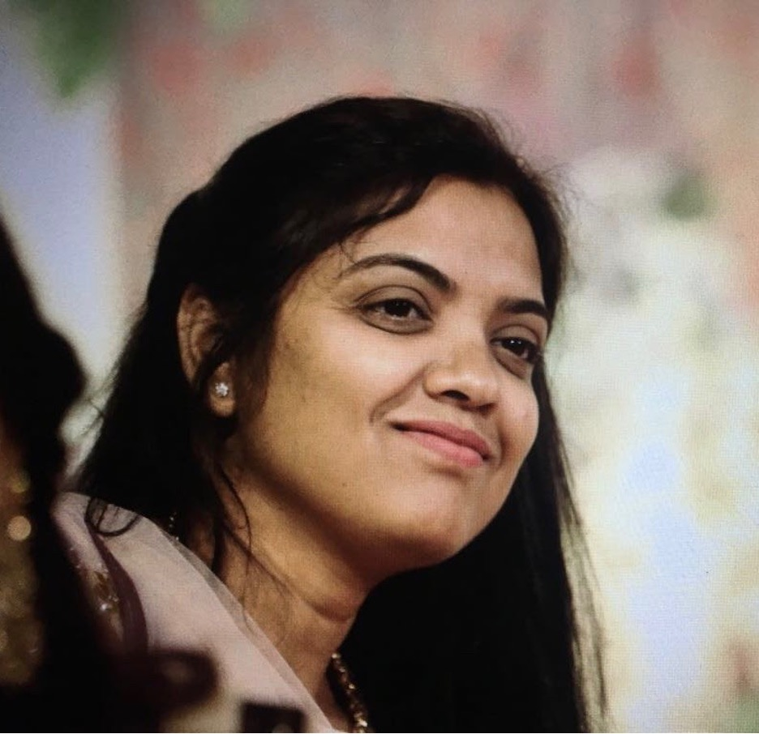
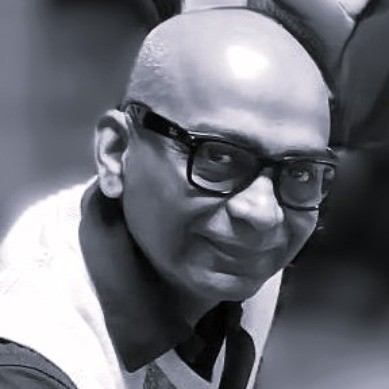
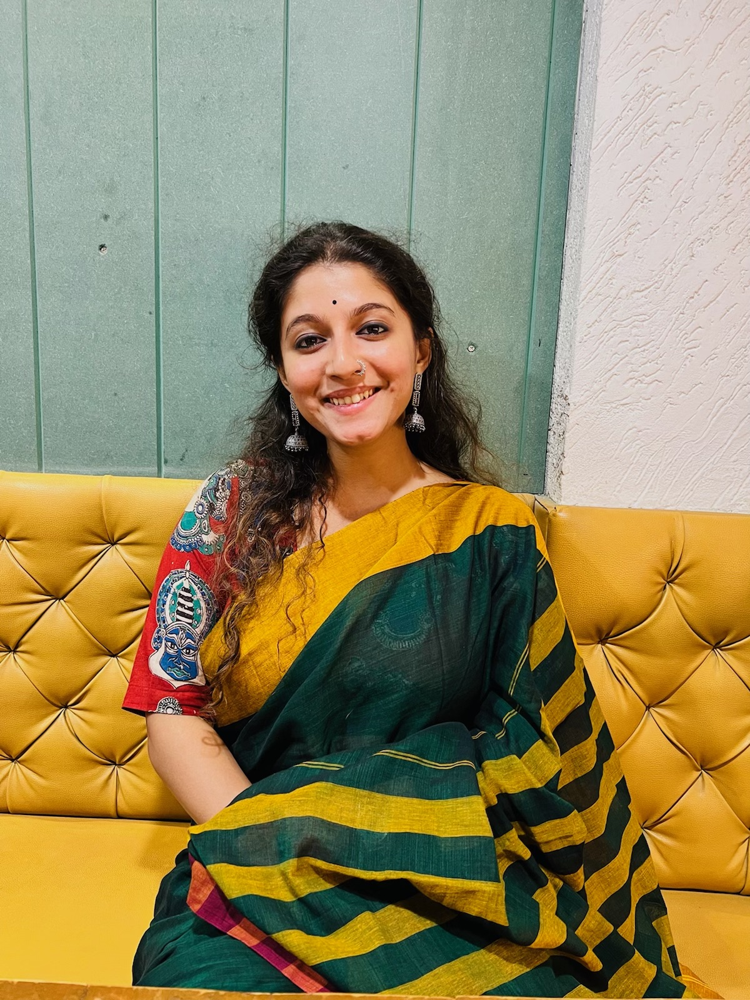

MARIGOLD PERFORMING ARTS
About Us
Rooted in Tradition. Dedicated to Artistry.
OUR STORY
Who We Are
Marigold Performing Arts (MPA) is a Dallas–Fort Worth-based institution dedicated to the education, practice, and presentation of Indian classical performing arts, with a primary focus on Kathak dance and Tabla.
Founded by Shabaree Jadhav, MPA strives to make authentic classical arts training accessible to the growing DFW community while upholding the technical discipline, artistic depth, and cultural knowledge integral to these traditions.
With affiliations to BVDU and ABGMV, Marigold offers students opportunities for structured learning and artistic development.
OUR MISSION
Training Artists. Cultivating Audiences.
Our mission is to cultivate a deeper understanding and appreciation of Indian classical performing arts through rigorous training, thoughtful arts education, and meaningful performance opportunities.
We are committed to nurturing the next generation of artists by providing strong technical foundations, encouraging individual artistic expression, and creating platforms for emerging performers to develop and share their work.
Beyond training performers, Marigold seeks to cultivate informed and discerning audiences who engage with classical arts not merely as entertainment, but as rich traditions of knowledge, expression, and cultural dialogue.
OUR APPROACH
Tradition, Education & Artistry
At Marigold, we believe that learning classical arts extends beyond mastering compositions and preparing for examinations.
Our approach emphasizes technical precision, consistent practice, theoretical understanding, creative inquiry, and a meaningful relationship with tradition.
Through Kathak and Tabla education, workshops, performances, and community initiatives, we strive to create an environment where students develop not only as skilled practitioners but also as thoughtful, independent artists.
OUR LEADERSHIP
The People Behind Marigold

Shabaree Jadhav
Founder, Director and CEO

Prashant Jadhav
Head of Administration & Tabla Instructor

Bhargavi Sardesai
Creative Director & Principal Instructor of Dance